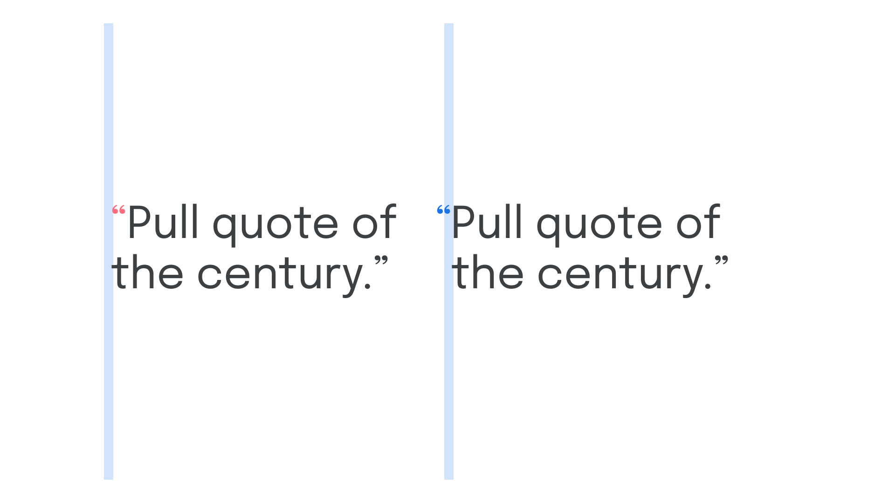

Hanging punctuation
By Google Fonts Knowledge contributors · Google Fonts Knowledge.
Original article · Source on GitHub · CC BY-SA 4.0. Text, illustrations and existing credits reproduced from the licensed Knowledge repository. Open Shelf adapted the layout and links; these adaptations are also CC BY-SA 4.0. No endorsement implied.
Hanging punctuation refers to punctuation marks that appear outside of a text frame (usually to the left in left-aligned, left-to-right text) to create a more pleasing vertical rhythm.

By moving punctuation marks outside of their designated space and into the (usually left) margin, the content itself appears to be visually aligned along the (usually left) edge. For pull quotes, for instance, the opening quotation marks create an optical indentation that disrupts the rhythm of the page. This can be improved by moving that opening quotation mark into the negative space that exists just outside of the text frame.